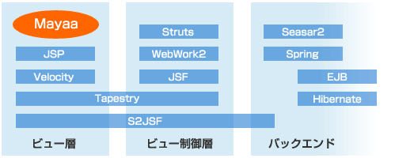
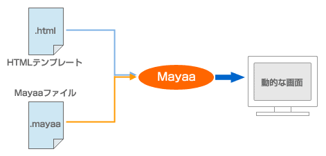

Documentation
1-1. Mayaa とは何か
 Mayaa の位置づけ
Mayaa の位置づけ
Mayaa をひとことで表すと、「HTML をテンプレートとして使う Web テンプレートエンジン」です。フレームワークとしての機能やページフローを扱う機能はなく、JSP を前提とするミドルウェア (Apache Struts など) と組み合わせて使うことを想定しています。
図 1-1-1 に Mayaa の立ち位置を示します。Mayaa は一般的な JSP の使い方と同じ位置になり、Struts や WebWork2 などと連携して使用するものです。

Mayaa が目指すのは、デザインとロジックを分離すること、Web デザイナとプログラマの協業を助けること、既存の JSP カスタムタグライブラリを有効活用することです。
■Web アプリケーションのビューにおける問題点
J2EE 標準の Web アプリケーション用ビュー技術は JSP (JavaServer Pages) です。しかし JSP はビュー技術として致命的な欠陥を持っています。
- ビューとロジックとが切り分けられていない
- 実行しなければデザインの確認ができない
1 番目の問題は JSP カスタムタグの登場によって軽減されましたが、2 番目の問題は未だに軽減すらされていません。そのため Web デザインを変更しづらく、Web デザイナかプログラマ、もしくは両者に負担がかかることになります。
■その他の HTML テンプレートエンジンの難点
最終的に出力するものは HTML 文書ですから、HTML ファイルをテンプレートとして使えれば上記 2 番目の問題は解決するはずです。それは自明ですから、HTML ファイルをテンプレートとする技術はいくつも登場しました。
しかしそれらの技術には JSP の代替として扱うには何かしら致命的な難点があり、決定的なものはありませんでした。難点をいくつか挙げると、たとえば次のようなものです。
- 独自タグが必要なため HTML オーサリングツールを使えない
- 制御用に特殊な文字列を埋め込むためデザイン確認に難がある
- ミドルウェア部分と一体になっているため他のミドルウェアを選択できない
- 独自技術のため JSP カスタムタグの資産を使えない
■ビューの課題に対する Mayaa の回答
Mayaa は JSP の代替として使えるよう設計されました。既存の HTML テンプレートエンジンの難点を解決し、JSP を前提としているフレームワークと組み合わせやすくなっています。
- テンプレートは HTML ファイルなのでブラウザでプレビューできる
- 独自タグを使わないため HTML オーサリングツールを使える
- 制御用に特殊な文字列を埋め込む必要はない
- 利便性のため特殊な属性を埋め込む使い方もできる
- ビュー技術のみを役割とするため好きなミドルウェアを使える
- JSP カスタムタグをそのまま使える
この中でも JSP カスタムタグを使えることは、既存のテンプレートエンジンにない特徴的な機能です。これによって、JSP の代替として使うときに過去の資産を活用できるようになります。
Mayaa の特徴
Mayaa の基本的な使い方では、HTML テンプレートファイルとそれに対応する設定ファイル (拡張子 .mayaa) の２つを元にして動的なページを生成します。HTML テンプレートの動的な部分に id 属性で印を付け、その id に対して設定をする形になります。

テンプレート型ビュー技術としての Mayaa の主な特徴は次の４点です。
- テンプレートとして使えるファイルは HTML、XHTML、XML
- 設定ファイルを使う方法、使わない方法があり、両方の混在も可能
- Java オブジェクトを操作する言語として JavaScript を採用
- JSP カスタムタグを使える
Mayaa の機能範囲はビュー技術のみですので、通常使う際は何らかの Servlet から forward して使うことになるでしょう。